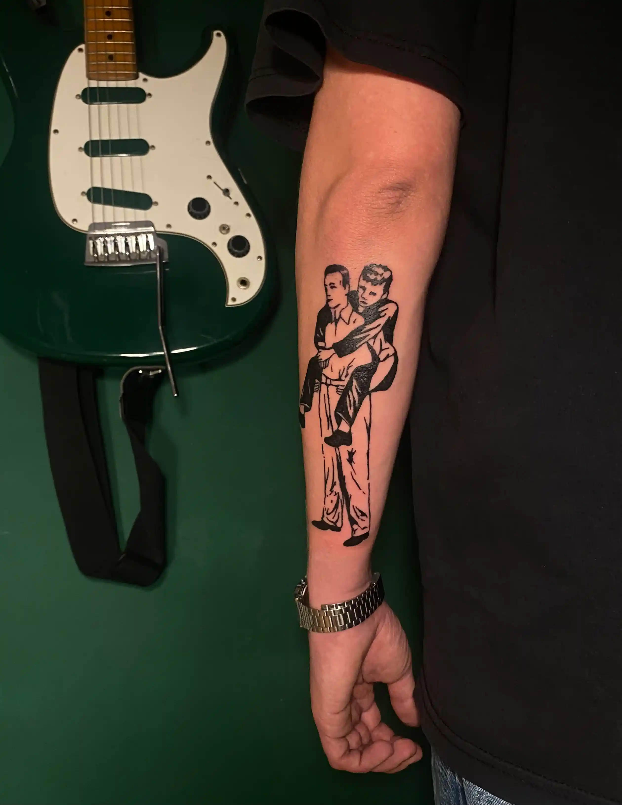
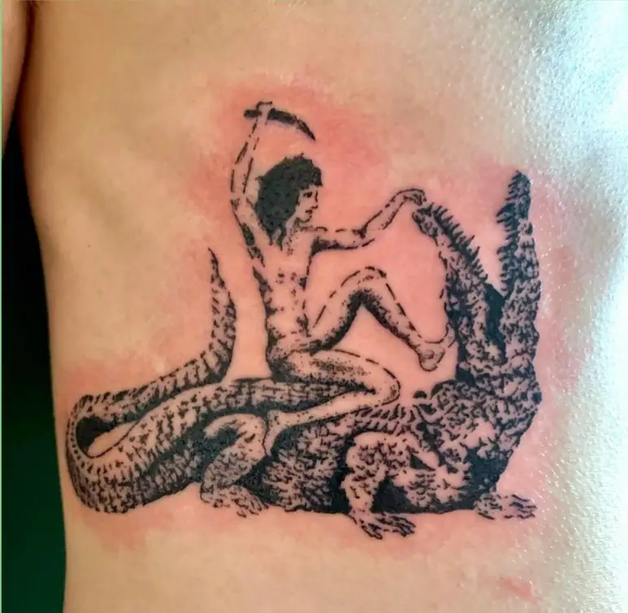
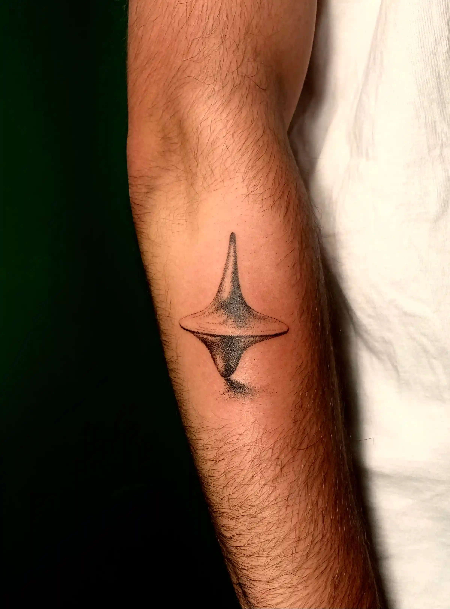
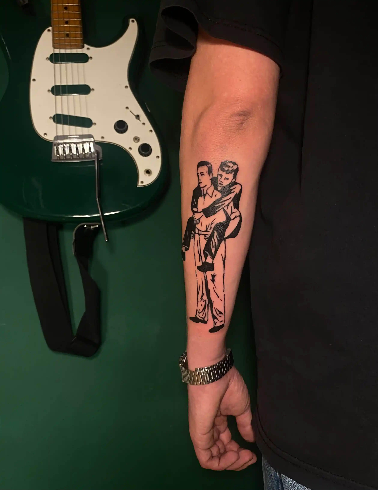
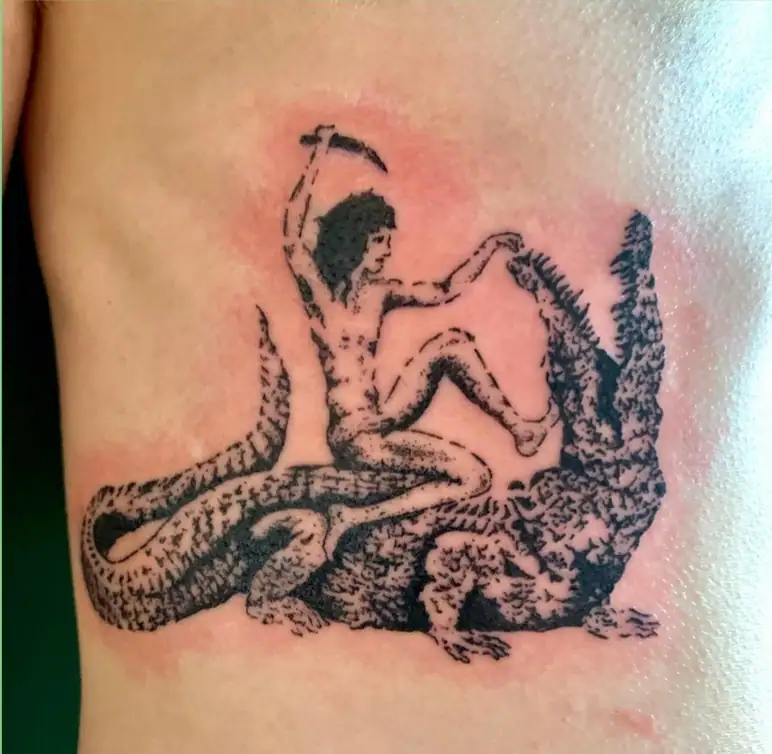
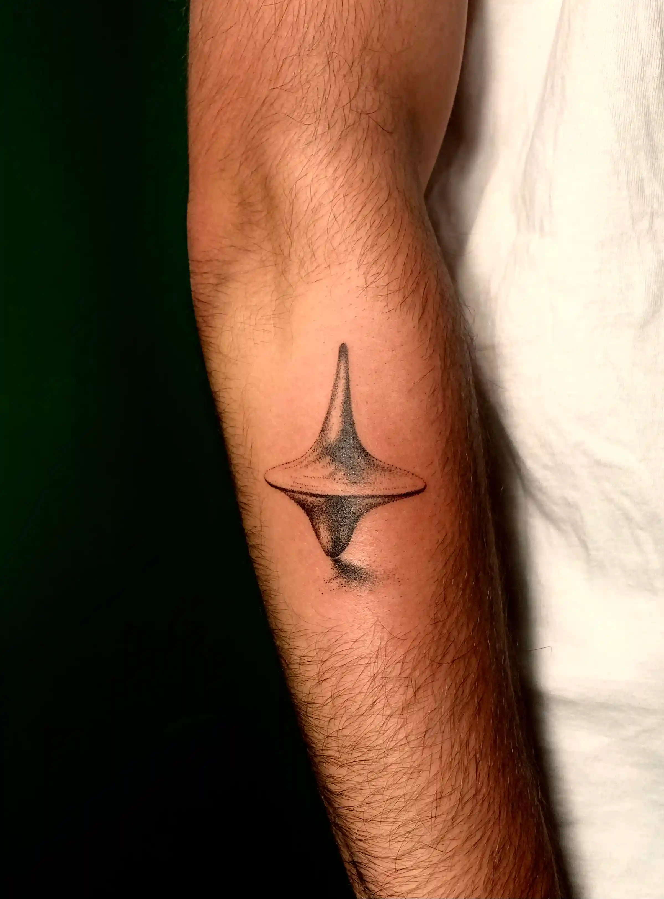

OM MIG
Jeg er 24 år gammel og bor i København. Jeg har en yderst stærk passion for kreativitet og æstetik, hvilket afspejler sig i min baggrund og interesser. Som ung brugte jeg meget tid på graffiti og har generelt haft en malerpensel i hånden, så længe jeg kan huske. Efter at have tilbragt efteråret 2022 på Vallekilde Højskoles designlinje, har jeg udviklet og opbygget en bred forståelse for design og visuel kommunikation. Og lige netop Vallekilde, gav mig mod på og lysten til at starte på multimediedesign på KEA. Udover at studere på KEA, bruger jeg bl.a. min tid på at male og spille guitar, hvilket bidrager til at styrke min kreative proces og tilmed giver mig nye perspektiver på mine designprojekter. Jeg stræber efter at skabe unikke og inspirerende designs, der forener kreativitet med funktionalitet. Ydermere arbejder jeg som tatovør, og har gjort dette i snart 2 år nu, hvilket betyder, at meget at min tid ligeledes går med at tegne og finde på nye ideer og koncepter til designs
For mig er alt, der har med æstetik at gøre, fascinerende, hvad enten det er et menukort på en restaurant eller en filmscene. Jeg går meget op i at udtrykke mig kreativt, og det kan ske gennem alle mulige medier. Måske er det derfor, jeg har eksperimenteret med så mange forskellige kreative udtryksformer.Det medie, der fylder mest i min hverdag, er dog tatoveringsdesign, hvor menneskekroppen fungerer som lærred. Det, jeg især elsker ved tatovering, er processen bag designet. Jeg bruger meget tid på at finde inspiration, som jeg kan opdage i stort set alt omkring mig. Min største inspirationskilde er dog gamle malerier, statuer og illustrationer. Noget af det mest interessante ved tatoveringer som designform er, at de lever gennem et menneske og forsvinder med tiden
GALLERI
 




